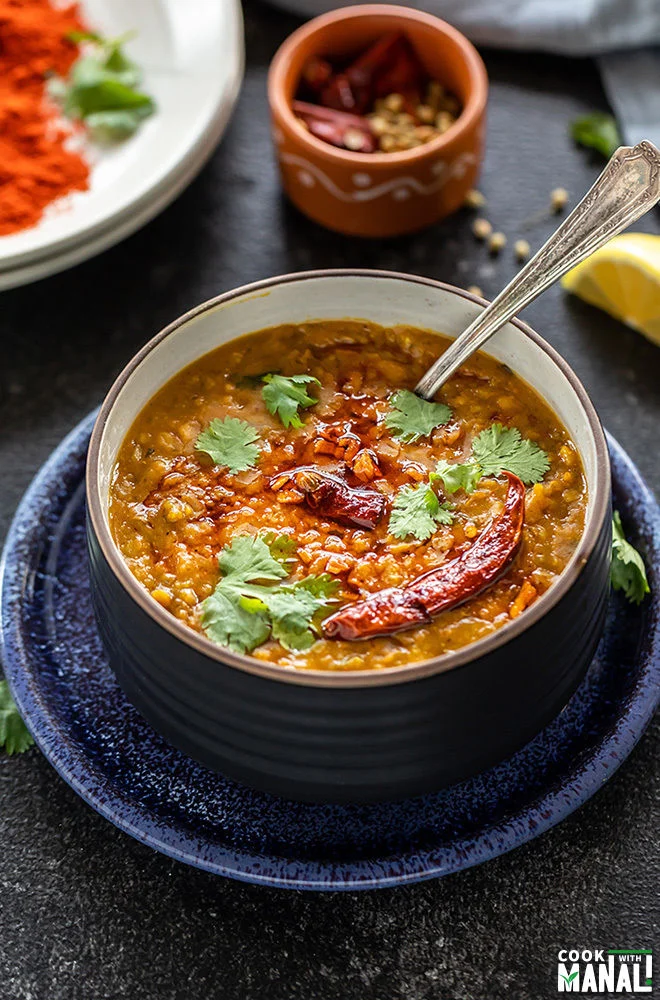

Dal

Description
Make a delicious smokey restaruant style tarka dal.
Using basic cheap ingredients to make something delicious.
Ingredients
- Two cups lentils of choice
- Thumb of ginger
- Four cloves of garlic
- Green chillis to taste
- Onion
- Tomatoes
Steps
- Add two cups of lentils to pot with water and tumeric, chilli and ginger
- While dal is cooking prepare the tarka by chopping onions, garlic, tomatoes and combining the whole spices to toast
- When dal is cooked through, toast spices until they pop and become fragrant, add oil, onion and tomato and cook till onion is transparent
- When tarka is ready mix into dal.
- Serve.